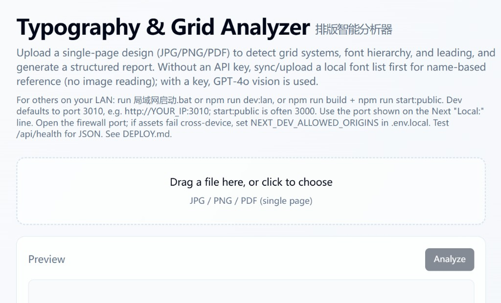
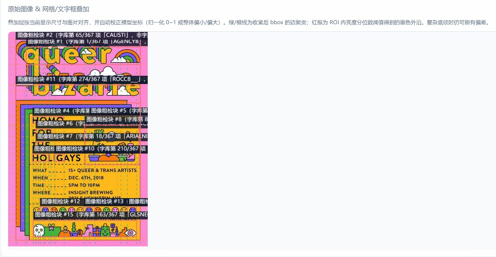
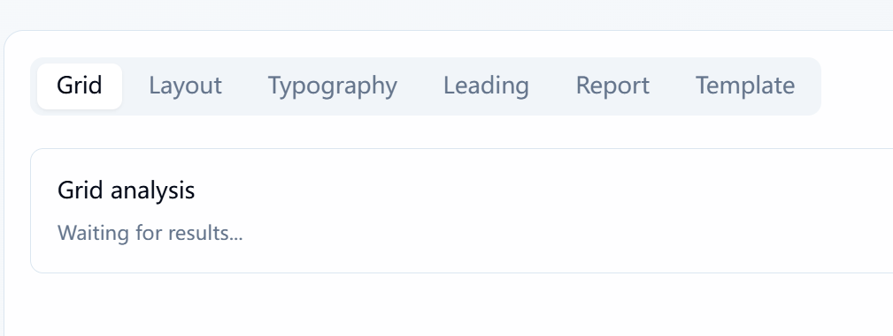
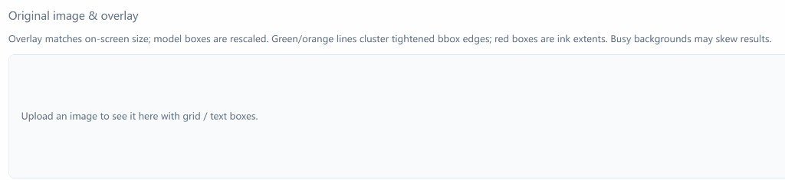

排版智能分析器
Typography & Grid Analyzer
单页设计稿的智能版式辅助：网格、字体层级、行距与结构化报告。
Intelligent layout support for single-page work—grid, type hierarchy, leading & structured reporting.

图 · 实际上传界面：大目标拖拽区、说明文案与 Preview / Analyze 动线 · Live upload UI
组员：陈清扬（MC569302） 李伊萱（MC569245）
核心概念
Core Concepts
中文
- 结构化阅读：把「感觉」变成可讨论、可复用的版式语言
- 人机协同：AI 广谱识读，设计师保留判断与定稿
- 作品优先：界面退后，用户设计稿始终是视觉焦点
English
- Structured reading: intuition → shareable layout vocabulary
- Human–AI: model scales perception; designer owns judgment
- Artifact-first: chrome recedes; the artwork stays hero
开发该工具的原因
Why We Built This Tool
中文
- 痛点：版式复盘常停留在口头，栏距与层级难以对齐认知
- 教学与协作：需要统一语汇，减少主观表述的损耗
- 核心理念：从「看设计」到「懂设计」—输出可对照、可迭代
English
- Pain: critique stays verbal—gutters & hierarchy misalign
- Teams & teaching: need shared vocabulary beyond taste
- North star: from seeing to understanding—comparable outputs
工具核心功能一览
Core Features
上传→网格 · 字体 · 行距→结构化报告→本地字库 + GPT-4o Vision

图 · 网格与检测块叠加：品红参考线、绿/橙/红框与字库匹配标注 · Grid & detection overlay
中文
- 单页 JPG / PNG / PDF 上传
- 网格系统、字体层级、Leading 结构化输出
- 画布叠加与报告对照原稿
- 同步本地字体列表；可选多模态 API 识图
English
- Single-page JPG / PNG / PDF
- Grid, typography hierarchy, leading
- Overlays + report locked to artwork
- Local font list + optional GPT-4o Vision
我的设计思维过程
Design Thinking Process
Empathize
访谈：作业批改、品牌对齐中的真实摩擦
Interviews: grading & alignment friction
Define
问题陈述：单页 → 可验证的结构化报告
Frame: page → verifiable report
Ideate
信息架构：上传、维度、标签、导出
IA: upload, tabs, export
Prototype
Figma 多轮 → Web 可交互原型
Figma loops → web prototype
Test
真实稿件走查；迭代文案与视觉权重
Real artifacts; refine copy & weight
在视觉传达流程中的位置
How It Fits the Visual Communication Workflow
灵感研究→概念发散→迭代优化 ★→交付复用
★ 工具主要介入迭代阶段：解构版式、统一评审语言 · Tool touchpoint at refine
中文
- 研究阶段建立风格锚点，工具不抢前置发散
- 定方向后用工具对齐网格与字体讨论
- 报告与 SVG 支持归档与再编辑
English
- Research & diverge stay human-led
- In refine, align on grid & type with shared output
- Reports & SVG for handoff & archive
关键 UI/UX 决策 ① · 上传界面
Key UI/UX ① · Upload Surface
中文
- 大面积虚线框：首要动作一目了然，降低首屏认知负荷
- 说明文案：格式与单页限制可读即懂
- Analyze：沿 Preview 区右缘放置，对比清晰、目标足够大
- 依据：零摩擦、沉浸式、Fitts’s Law
English
- Large dropzone: primary action obvious; low cognitive load
- Copy: formats & single-page rule scannable
- Analyze CTA: high contrast, Fitts-friendly target
- Why: zero friction, immersion, Fitts’s Law
① 拖拽区 Dropzone
② 提示 Copy
③ CTA
全幅界面截图 · Full upload screen
关键 UI/UX 决策 ② · 分析与标签
Key UI/UX ② · Analysis & Tabs
中文
- 顶部标签：Grid / Layout / Typography… 按任务分组，降低寻找成本
- 激活态：白底深字 vs 灰字，层级一眼可扫
- Grid 卡片：白底弱边框，不压过下方作品预览
- 等待态：轻量文案，不阻断版心
English
- Tabs: task-grouped nav—scannable, low hunt time
- Active state: white pill vs muted labels
- Card: quiet chrome; preview stays dominant
- Waiting: lightweight, non-blocking
Tab 导航
Grid 面板
Waiting state

Grid 标签 + 结果卡片 + Waiting for results… · Grid tab screenshot
关键 UI/UX 决策 ③ · 整体风格与交互
Key UI/UX ③ · Chrome & Interaction

中性浅调 · 空状态说明 · Neutral empty state
分析层高密度信息仅在作品区展开 · Rich overlay on artwork
中文
- 浅灰蓝背景 + 白卡片：不抢用户稿件饱和度
- 留白与圆角统一，专业感来自克制而非装饰
- 导出与分析等末端动作标签明确、可预期
English
- Cool gray UI + white panels—won’t fight the artwork
- Whitespace & radius system—craft through restraint
- End-of-flow actions explicit & predictable
开发流程简述
Development Process · Design-Led
中文
- 设计先行：Figma 完成 IA、组件与多版视觉迭代
- 规范落地：间距、字号、圆角与状态与前端对齐
- 并行校对：减少「差不多」的漂移
English
- Design-first: Figma IA, components, visual passes
- Specs: spacing, type, radius, states in code
- Joint QA: design & dev tighten drift
Figma→Design tokens & components→Next.js UI→API / analysis
总结与价值
Summary & Value
中文
- 工具是设计师思维的延伸：外化隐性判断
- 价值：统一语汇、加速评审、教学与自检
- 未来：更细字重、设计 token、协作批注与版本对比
English
- An extension of designer thinking
- Value: vocabulary, faster reviews, teaching
- Next: weight fidelity, tokens, collaboration
感谢
Thank You · Q&A
中文
欢迎提问与交流。
组员：陈清扬（MC569302） 李伊萱（MC569245）
English
Questions & discussion welcome.
Group members: Chen Qingyang (MC569302), Li Yixuan (MC569245)